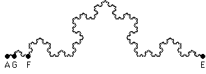

|  |
| Similar arguments show that |
| if the distance between A and F is a finite number, L, then the distance between A and E is 16L, |
| if the distance between A and G is L, then the distance between A and E is 64L. |
| and so on. |
| So from the fact that the distance between A and E is infinite, we conclude that the distance between the endpoints of any copy of the Koch curve, no matter how tiny to our Euclidean eyes, is infinite. |
Continue to the next step.
Return to Koch Curve Length Paradox.